Resultan vektor adalah vektor tunggal yang merupakan hasil dari penjumlahan atau penggabungan dari dua atau lebih vektor. Resultan ini mencerminkan total efek atau dampak dari vektor-vektor tersebut, baik dalam hal magnitude (besarnya) maupun arahnya. Dalam konteks fisika, resultan vektor digunakan untuk menggambarkan hasil akhir dari berbagai gaya atau vektor yang bekerja pada suatu objek, membantu dalam menganalisis pergerakan atau keseimbangan benda dalam suatu sistem
Untuk menentukan resultan dua buah atau lebih vektor harus meninjau dulu besar dan arah dari masing-masing vektor yang bekerja pada benda. Bila vektor tersebut adalah gaya (karena juga merupakan besaran vektor), maka kita harus memperhatikan besar dan arah gaya. Misalnya terdapat 3 buah gaya F1, F2, dan F3, anda dapat membedakan resultan gaya yang bekerja pada benda tersebut.
a) Resultan gaya-gaya garis selurus
Resultan gaya segaris-lurus dapat ditentukan dengan 2 cara, yaitu :
1. Gaya-gaya searah
Besar resultan gaya yang gaya-gayanya searah dapat ditentukan dengan menjumlahkan semua gaya-gaya yang bekerja pada benda.
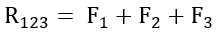
2. Gaya-gaya berlawanan arah
Besar resultan gaya yang gaya-gayanya berlawanan arah dapat ditentukan dengan mengurangkan gaya-gayanya.
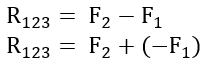
b) Resultan gaya-gaya sebidang datar
Dapat ditentukan dengan beberapa cara, yaitu:
1. Cara segitiga
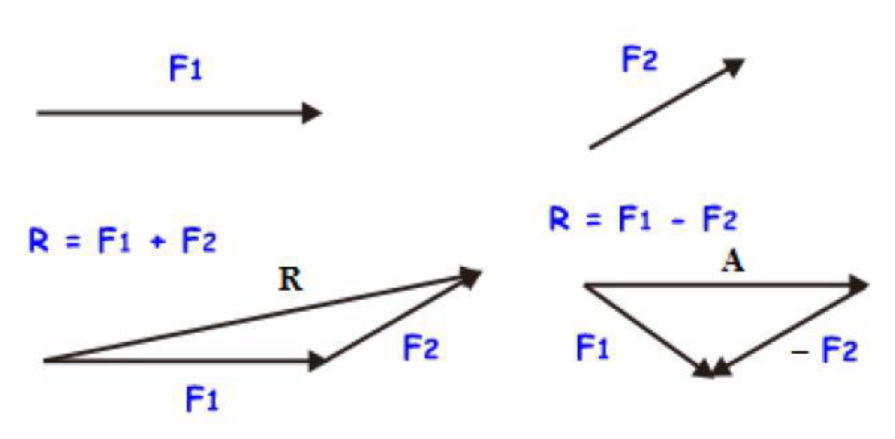
2. Cara jajaran genjang
Nilai resultan kedua gaya tersebut dapat ditentukan dengan menggunakan rumus cosinus :
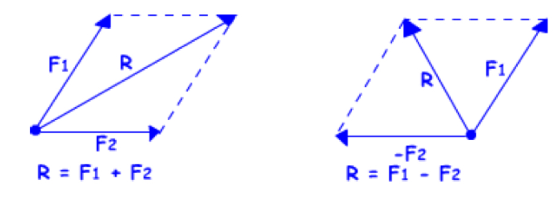
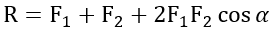
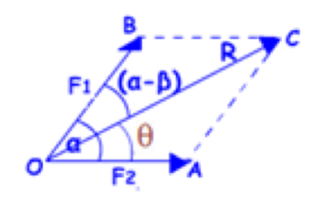
Perhatikan gambar diatas, dengan arah resultan kedua gaya (θ) menggunakan rumus sinus :
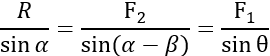
3. Cara poligon
Metode poligon atau segi banyak adalah suatu cara penjumlahan vektor dengan cara memindah-mindahkan vektor ke ujung vektor lainnya dengan selalu memperhatikan ketentuan bahwa panjang (nilai) dan arah vektornya tidak berubah, misalkan anda tinjau Kembali tiga buah vektor gaya berikut ini.
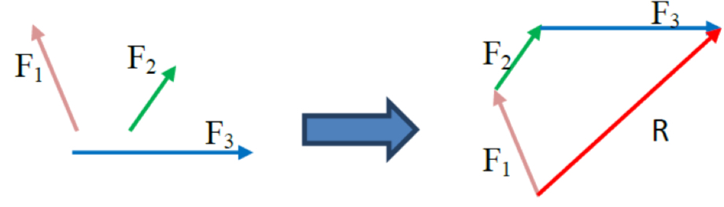
4. Cara analisis
Metode analisis adalah suatu cara penjumlahan gaya (vektor) dengan lebih dulu menguraikan gaya-gayanya ke sumbu-sumbu yang saling tegak lurus. Perhatikan gambar dibawah ini.
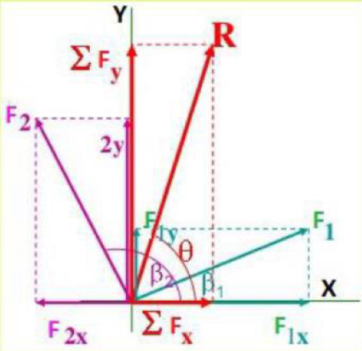
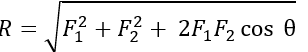
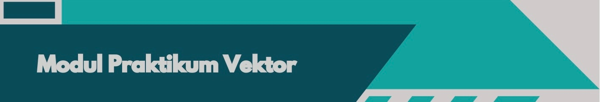